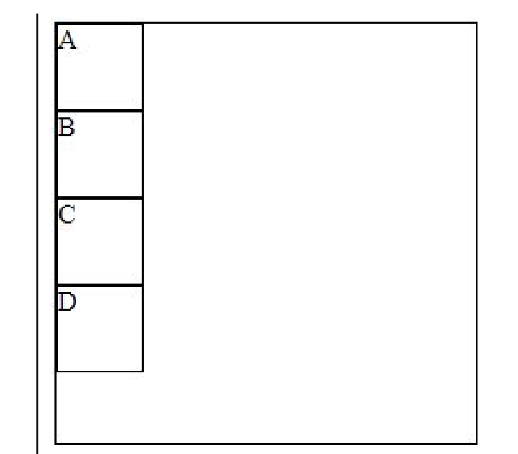
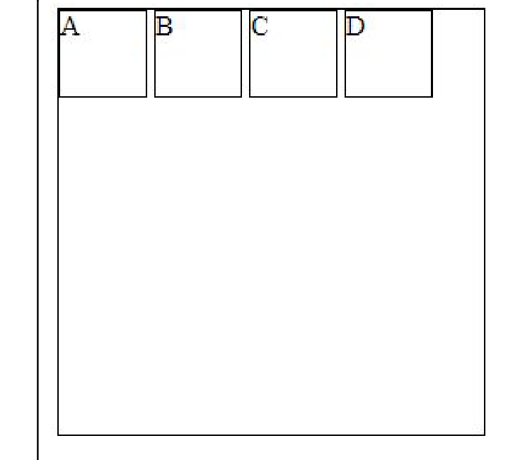
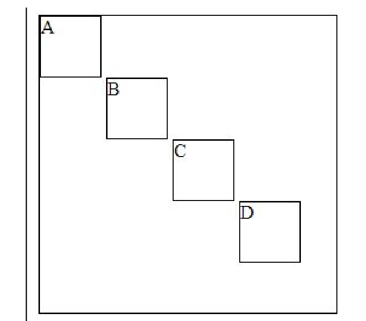

Mivel az elem szélessége mindig 600px, ezért, ha az ablak szélessége kisebb lesz 600px-nél, az ablak alján megjelenik egy vízszintes görgetősáv...
Amikor az ablak szélessége kisebb, mint 600px, az elem elkezd zsugorodni
Amikor az ablak szélessége kisebb, mint 580px, akkor megint az alsó görgetősáv jelenik meg, mert az elem kilóg
létrehozhatsz nekik egy szülő tárolót is szintén kerettel, hogy az elmozdulás mértéke is jól látható legyen. Például:

Hozd létre a következő elrendezéseket:


Az első (A) elem "kiemelődött" a helyéről és helyére a következő elem került.
A B elem kiemelődött a konténerből és a C elem becsúszött mögé (a "B" elem korábbi helyére)
A container-t position:relative; -ra állítjuk (mert static esetén a body-hoz igazodna),
majd az absolute-ra állított elemnél beállítjuk: top:0;. Eredményként az elem eltakarja
az ott elhelyezkedő elemet. ("B" takarja "A"-t)
Gyakorlati példák a fixed és sticky beállításokra: